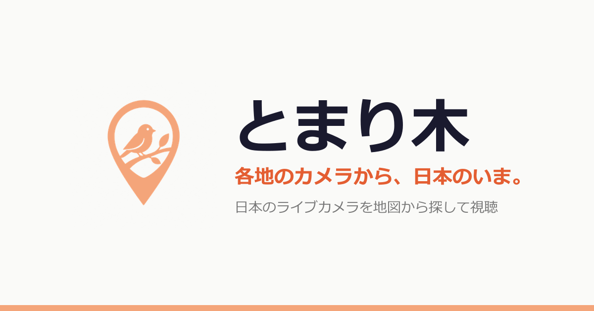

Tomarigi World｜用可互動地球儀探索全球即時直播鏡頭

一句話摘要
Tomarigi World 把散落在各處的公開鏡頭做成一個「可旋轉、可辨識晝夜」的全球地球儀：想看某個城市當下的街景、海邊、車站、機場或動物棲地時，比逐一搜尋 YouTube 更有探索感。
官方確認的功能
- World 版可在互動地圖上探索全球的 live streams 與定期更新的相機圖像。
- 可依類別篩選：Sea、Nature、City、Landmark、Railway、Airport、Animals、Rivers & Roads、Other。
- 地圖使用 OpenStreetMap、CARTO 與 NASA EOSDIS GIBS 的夜間燈光影像；頁面會呈現地球的晝夜情境。
- 「Japan」與「World」版本的直播，都是以原發布者的官方 YouTube embedded player 播放；Tomarigi 不複製或重新串流影片。
- World 版中的 Windy、NZTA、Fintraffic、挪威 Statens vegvesen、TfL、DriveBC、Caltrans 等項目是定期更新圖片，更新頻率依供應者與地點而異，不應一概視為真正 live video。
實際使用方式
- 開啟 https://tomarigi.me/world
- 拖曳地球儀、縮放至想看的區域，點選地圖 pin。
- 用上方分類快速縮小範圍；例如旅行前看 City / Landmark、想放背景畫面看 Sea / Nature、想觀察交通則看 Railway / Airport / Rivers & Roads。
- 想隨機探索可使用頁面的「Surprise me」；需要特定地點可打開 Camera list。
- 注意鏡頭來源與嵌入平台：播放或點開 YouTube 時，會依 YouTube/Google 的個別隱私政策處理資料。
對旅行與教學的價值
- **旅行前的環境感**：先看目的地晨昏、天氣氛圍、人流與海況，建立比靜態照片更真實的期待。
- **地理／語言課暖場**：選一個城市或地標讓學生觀察，再延伸到時區、氣候、交通與在地文化。
- **專注背景畫面**：海岸、自然與鐵道路線可作安靜工作時的環境畫面；請尊重原頻道的著作權與使用限制。
- **交通狀態的輔助參考**：道路、機場或港口的更新圖片能提供現場感，但不應取代官方交通公告、氣象警報或安全決策。
隱私、可靠性與判讀邊界
Tomarigi 官方表示自己不運行站內分析，也不以 cookie/分析工具識別或追蹤訪客；但嵌入的 YouTube 等外部服務仍可能依各自政策接收資料。提交地點回報、鏡頭請求與鐵道路線校正時，服務會暫時記錄提交內容與 IP 做反垃圾用途。
鏡頭是否在線、畫面是否最新、是否被遮蔽或暫停，均取決於原始發布者與資料供應商。尤其道路相機的「更新圖片」和影音直播不同，適合做輔助觀察，不適合據此作緊急行程或安全判斷。
來源
- Tomarigi World：https://tomarigi.me/world
- Camera list：https://tomarigi.me/world/spots
- 官方 About / Sources / Privacy：https://tomarigi.me/about/en#world